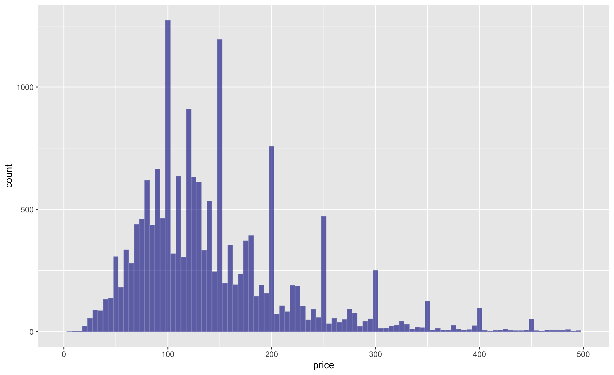

Module 20 Writing functions
Learning goals
- Be able to write your own functions
- Be able to source your own functions from separate R files
- Be able to use functions to make your work more efficient, effective, and organized
First steps
You’ve already used dozens of functions during your learning in R so far. As you start applying R to your own projects, you will inevitably encounter a puzzle that could be solved by a custom function you write yourself. This module shows you how.
As explained in the Calling Functions module, most functions have three key components:
- one or more inputs,
- a process that is applied to those inputs, and
- an output of the result.
When you define your own custom function, these are the three pieces you must be sure to include.
Here is a basic example:
my_function <- function(x){
y <- 1.3*x + 10
return(y)
}Now use your function:
my_function(x=2) # example 1
[1] 12.6
my_function(x=4) # example 2
[1] 15.2Let’s break this down.
my_functionis the name you are giving your function. It is the command you will use to call your function.- The
function()command is what you use to define a function. xis the variable you are using to represent your input.y <- 1.3x + 10is the process that you are applying to your input.return(y)is the command you use to define what the function’s output will be.
Note that you are not required to write out x=2 in full when you are calling your function. Just providing 2 can also work:
my_function(2)
[1] 12.6Exercise 1
Define your own basic function and run it to make sure it works.
Next steps
Multiple inputs
You can define a function with multiple inputs. Just separate each input with a comma.
To demonstrate this, let’s modify the function above to allow you to define any linear regression you wish:
my_function <- function(x,a,b){
y <- a*x + b
return(y)
}Now call your function:
my_function(x=2,a=1.3,b=10) # example 1
[1] 12.6
my_function(x=4,a=5,b=100) # example 2
[1] 120Note that you do not need to write out the name of each input, as long as you provide inputs in the correct order.
my_function(2, 1.3, 10) # example 1
[1] 12.6
my_function(4, 5, 100) # example 2
[1] 120But note that it is usually best practice to name each input in your function call, to prevent the possibility of any confusion or mistakes. Also, when you name each input you can provide inputs in whatever order you wish:
my_function(x=2, a=1.3, b=10)
[1] 12.6
my_function(a=1.3, b=10, x=2) # different inout order, same output value
[1] 12.6Providing defaults for inputs
Just as R’s base functions include default values for some inputs (think na.rm=FALSE for mean() and sd()), you can define defaults in your own functions.
This version of my_function includes default values for inputs a and b.
my_function <- function(x,a=1.3,b=10){
y <- a*x + b
return(y)
}When you provide default values, you no longer need to specify those inputs in your function call:
my_function(x=2)
[1] 12.6NULL as a default
Setting the default value for an input to NULL can be useful in certain use cases. For example, let’s say that if b is not defined by the user, you want its value to be set to five times the value of x.
my_function <- function(x,a=1.3,b=NULL){
# Handle input `b`
if(is.null(b)){
b <- x*5
print(paste("b was NULL! Setting its value to ", b))
}
# Now perform process
y <- a*x + b
return(y)
}In this function, a conditional statement is used – if(is.null(b)){ ... } – to handle the input b when the user does not specify a value for it. When b is NULL, the logical test is.null(b) will be TRUE, which will trigger the conditional statement and case b to be defined as x*5. Conditional statements will be convered in detail in the next modules.
Try running the function with and without providing a value for b.
my_function(x=2,b=5)
[1] 7.6
my_function(x=2)
[1] "b was NULL! Setting its value to 10"
[1] 12.6Conditional statements such as if(is.null(x)){ ... } or if(is.na(x)){ ... } will be helpful in dealing with all the possible values that a user can pass to your custom functions.
Complex inputs
You can pass vectors, dataframes, and any other data structure as inputs in your own custom functions. For example:
my_input <- 1:20
my_function(x=my_input,a=1.2,b=10)
[1] 11.2 12.4 13.6 14.8 16.0 17.2 18.4 19.6 20.8 22.0 23.2 24.4 25.6 26.8 28.0
[16] 29.2 30.4 31.6 32.8 34.0Complex function outputs
At some point you will want multiple objects to be returned by your function. For example, perhaps you want both y and b to be returned now that you can define b according to the value of x.
Unfortunately, the return() command does not let you include multiple objects. return(y,b) will not work. To make it work, you have to place your output objects within a single object, such as a vector, dataframe, or list.
Here is a modification of my_function() that allows multiple outputs:
my_function <- function(x,a=1.3,b=NULL){
# Handle input `b`
if(is.null(b)){
b <- x*5
}
# Now perform process
y <- a*x + b
output <- c("y"=y,"b"=b)
return(output)
}Now my_function() works like this:
my_function(x=5)
y b
31.5 25.0 To get the value of just y or just b, you can treat the output just like any other vector:
my_function(x=5)[1]
y
31.5
my_function(x=5)[2]
b
25 Adding plots
Plots can be included in the function commands just as in any other context:
my_function <- function(x,a=1.3,b=10){
y <- a*x + b
plot(y ~ x, type="b")
return(y)
}my_input <- 1:20
my_function(x=my_input)
[1] 11.3 12.6 13.9 15.2 16.5 17.8 19.1 20.4 21.7 23.0 24.3 25.6 26.9 28.2 29.5
[16] 30.8 32.1 33.4 34.7 36.0Adding plots to functions can be super useful if you want to make multiple plots with the same formatting specifications. Rather than retyping the same long plot commands multiple times, just write a single function and call the function as many times as you wish.
Let’s add some fancy formatting to our plot. Note that we will modify the name of the function to make it more descriptive and helpful. The lm in plot_my_lm stands for linear model, which is what is being defined with the y=ax+b equation.
plot_my_lm <- function(x,a=1.3,b=10,plot_only=TRUE){
# Process
y <- a*x + b
# Plot
par(mar=c(4.2,4.2,3,.5)) # set plot margins
plot(y ~ x, type="o",axes=FALSE,ann=FALSE,pch=16,col="firebrick",xlim=c(-20,20),ylim=c(-20,20)) # define basic plot
title(main=paste("y =",a,"x +",b)) # print a dynamic main title
title(xlab="x",ylab="y") # print axis labels
axis(1) # print the X axis
axis(2,las=2) # print the Y axis and turn its labels right-side-up
abline(h=0,v=0,col="grey70") # add grey lines indicating x=0 and y=0
# Return
if(plot_only==FALSE){
return(y)
}
}Note that we added a parameter, plot_only. When it is set to TRUE, the function will not return any numbers.
Now let’s call this fancy function a bunch of times:
my_input <- -20:20 # define a common x input value
par(mfrow=c(3,2)) # stage a multi-paned plot
plot_my_lm(x=my_input,a=2,b=15)
plot_my_lm(x=my_input,a=1,b=10)
plot_my_lm(x=my_input,a=.5,b=5)
plot_my_lm(x=my_input,a=0,b=0)
plot_my_lm(x=my_input,a=-1,b=-5)
plot_my_lm(x=my_input,a=-2,b=15)
Think about how many lines of code would have been needed to write out all of these fancy plots if you did not use a custom function! Think about how cluttered and dizzying your code would look! And think about how many opportunities for errors and inconsistencies there would have been! That is the advantage of writing your own functions: it makes your work more efficient, more organized, and less prone to errors.
Another major advantage of this approach comes into play when you decide you want to tweak the formatting of your plot. Rather than going through each plot(...) command and modifying the inputs in each one, when you write a custom plotting function you just have to make those changes once. Again, using a custom function saves you time and removes the possibility of inconsistencies or mistakes in the plots you are creating.
Exercise 2
Modify the most recent version of plot_my_lm above such that you can specify the color for the plotted line as an input in the function. Then reproduce the multi-paned plot using a different color in each plot. (Here is a good reference for color options in R).
Sourcing functions
As you advance in your coding, you will likely be writing multiple custom functions within a single R script. It is usually useful to group these functions into the same section of code near the top of your script.
But for even better script organization and simplification, you should source your functions from a separate R script. This means placing your function code in a separate R script and calling that file from the script in which you are carrying out your analyses. In addition to simplifying your analysis script, keeping your functions in a separate file allows them to be shared or sourced from any number of other scripts, which further organizes and simplifies your project’s code and increases the reproducibility of your work.
Here is how sourcing functions can work:
Open a new
Rscript. Save it asfunctions.Rand save it in the same working directory as the script you are using to work through this module.Copy and paste the
plot_my_lm()function into yourfunctions.Rscript. Save that script to ensure your code is safe.Now remove the code defining
plot_my_lm()from your moduleRscript.In its place, type this command:
source("functions.R")This command tells R to run the code in functions.R and store the objects and outputs from it in its active memory. You can now call plot_my_lm() from your module script.
Exercise 3
Carry out the above instructions to ensure that you know how to source a function from a separate R script.
Review assignment: Baby names over time

In this exercise, you will investigate annual trends in the prevalence of six names for babies born in the United States.
Step 1. Decide upon five names of interest to you, in addition to your own. Create a vector of these six names.
Step 2. Install and load the package babynames, which includes the names of each child born in the United States from 1880 to 2017, according to the Social Security Administration.
Step 3. This package provides the dataset in a dataframe that is also named babynames. Familiarize yourself with this dataset using its documentation.
Step 4. Before writing any functions, do some basic exploration with this dataset.
- How many different names have been used since 1880?
- What is the most common name (proportionally) ever given to female babies?
- To male babies?
- What was the most common name in 2017?
Step 5. Write a function that takes any name and plots its proportional prevalence from 1880 to 2017. Format the plot beautifully. Provide the name as the main title of the plot.
Step 6. Include an input that allows the user to specify the y axis range. If that input is set to NULL, the function should just use the maximum value contained in the data itself, scaled by 1.2 to make the plot prettier. Always use 0 as the lower bound of the y axis.
Step 7. Create a multi-pane plot containing six subplots, one for each of your names of interest.